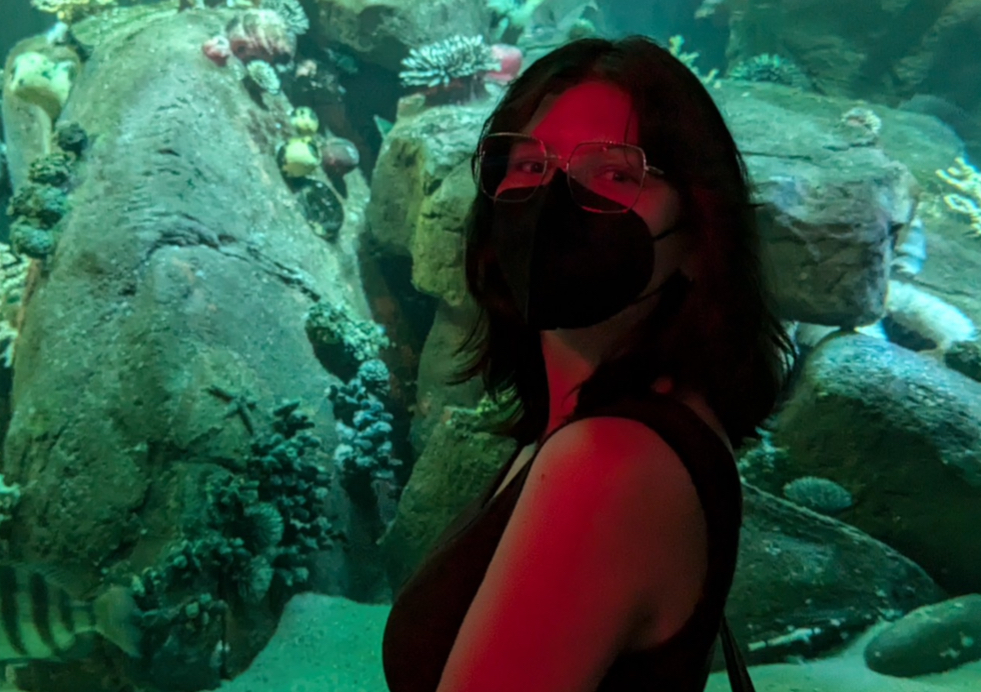

Hey! I'm Bee Wertheimer (they/she), a narrative designer and game developer based in Brooklyn, NY.
My work explores what it means to love and hurt and is deeply informed by my personal experiences.
I tell stories I wish I had heard when I was young and scared in the hopes that others will take comfort in them.
I belong to the inaugural BFA Game Design class at Pratt Institute, alongside a Minor in Creative Writing.